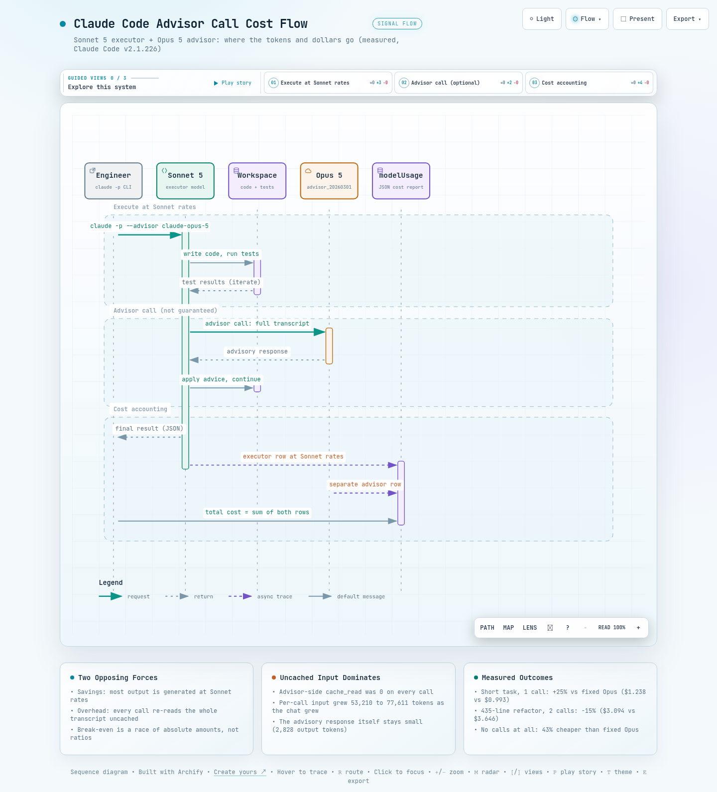

01사실 관계 - advisor 도구와 실험 설계
이 절에서는 advisor가 어떤 기능인지, 그리고 비용을 비교하기 위해 무엇을 어떻게 실험했는지 정리합니다.
Claude Code는 실제 작업을 수행하는 실행 모델(executor)과 별도로 자문 모델(advisor)을 지정할 수 있습니다.
advisor는 실행 모델이 어려운 판단을 만났을 때 의견을 구하는 더 강한 모델입니다.
--advisor claude-opus-5 플래그, /advisor 명령,
advisorModel 설정으로 켭니다.
호출 여부는 실행 모델이 스스로 판단합니다. 그래서 구성만으로는 호출이 보장되지 않습니다.
호출 기록은 어디에 남을까
API 레벨에서 advisor는 advisor_20260301 도구로 구현됩니다. 호출 기록은 usage.iterations[].type == "advisor_message"로 남습니다. Claude Code의 JSON 출력에서는 modelUsage에 advisor 모델의 별도 행으로 집계됩니다.
무엇을 실험했나
실험은 두 개의 과제를 다섯 개의 arm(비교를 위한 실험 조건 묶음)으로 실행했습니다. 1차 과제는 Python 표준 라이브러리만 쓰는 CLI 가계부(expense tracker)와 unittest 작성입니다. 2차 과제는 435줄 레거시 모놀리스를 패키지로 리팩토링하는 작업입니다.
모든 arm은 격리 환경(--setting-sources project --strict-mcp-config)에서 동일 프롬프트로 실행했습니다. 아래 표에서는 각 arm의 과제, 구성, advisor 호출 횟수를 확인할 수 있습니다.
| Arm | 과제 | 구성 | advisor 호출 |
|---|---|---|---|
| A | 1차 - 가계부 CLI | Sonnet 5 + Opus 5 advisor | 0회 (자연 상태) |
| A2 | 1차 - 가계부 CLI | Sonnet 5 + Opus 5 advisor | 1회 (시스템 프롬프트로 유도) |
| B | 1차 - 가계부 CLI | Opus 5 고정, advisor 비활성화 | - |
| C | 2차 - 대형 리팩토링 | Sonnet 5 + Opus 5 advisor | 2회 (시스템 프롬프트로 유도) |
| D | 2차 - 대형 리팩토링 | Opus 5 고정 | - |
advisor가 쓴 토큰은 modelUsage에 advisor 모델의 별도 행으로 기록됩니다. executor 행만 보고 비용을 집계하면 advisor 비용이 통째로 빠집니다. 총비용은 두 행을 더해야 합니다. 이 문서의 표에서는 Haiku 유틸리티 행(약 $0.001)을 생략했습니다.
02동작 원리 - advisor 호출의 비용 구조
이 절에서는 advisor를 한 번 부를 때 비용이 정확히 어디서 나가는지 봅니다. 결론부터 말하면 조언을 생성하는(출력) 비용이 아니라 대화를 읽는(입력) 비용입니다.
advisor가 호출되면 그 시점까지의 전체 대화 트랜스크립트(지시, 응답, 도구 결과를 모두 담은 대화 기록)가 advisor 모델의 입력으로 전달됩니다. Claude Code는 advisor 측에 프롬프트 캐싱(한 번 읽은 입력을 저장해 두고 싸게 재사용하는 기능)을 쓰지 않습니다. 그래서 이 입력 전체가 매 호출마다 uncached input(캐시 없이 새로 읽어 전액 과금되는 입력)으로 과금됩니다.
실측에서도 advisor 측 cache_read(캐시에서 읽은 토큰 수)는 매번 0이었습니다.
호출 1회는 얼마짜리일까
1차 실험의 호출 1회를 보면 구조가 분명합니다. input 53,210토큰, output 2,828토큰으로 호출 1회에 $0.337이 들었습니다. 자문 응답 자체(output 2,828토큰)는 소량이고, 비용 대부분이 트랜스크립트를 읽는 input에서 나옵니다.
대화가 길어지면 어떻게 될까요? 2차 실험에서는 호출당 평균 input이 77,611토큰으로 늘었고, 호출 2회 합계가 $0.856이었습니다.
이 구조에서 두 가지가 따라 나옵니다. 첫째, 호출당 비용은 대화 길이에 비례해 커집니다. 둘째, 같은 자문이라도 대화 후반에 호출될수록 비쌉니다.
따라서 advisor를 자주 부르는 구성은 대화가 길어질수록 오버헤드가 빠르게 쌓입니다.
031차 실험 - 짧은 과제
이 절에서는 짧은 과제를 세 가지 구성으로 실행해 비용을 비교합니다. 결과는 advisor가 실제로 호출됐는지에 따라 갈렸습니다.
1차 과제는 Python 표준 라이브러리만 쓰는 CLI 가계부와 unittest 작성입니다. add / list / summary / delete 서브커맨드, JSON 영속화, 입력 검증, 에러 케이스 테스트까지 포함합니다. 다만 설계 판단이 크게 필요하지 않은 짧고 평이한 과제이고, 세 arm 모두 테스트 통과까지 완주했습니다.
아래 표에서는 arm별 턴 수(모델이 응답을 주고받은 횟수)와 함께, 마지막 열의 총비용 차이를 보시기 바랍니다.
| Arm | 구성 | 턴 | 시간 | output 토큰 | cache read | 비용 |
|---|---|---|---|---|---|---|
| A | advisor 구성, 호출 0회 | 22 | 135초 | 9,626 | 959K | $0.570 |
| A2 | advisor 구성, 호출 1회 | 23 | 213초 | 14,516 + 2,828 | 1,120K | $1.238 |
| B | Opus 5 고정 | 15 | 213초 | 18,052 | 530K | $0.993 |
호출이 없으면 advisor 구성이 가장 쌌습니다
Arm A에서 Sonnet은 자문 없이 완주했습니다. 이 경우 advisor 구성의 오버헤드는 0입니다. 비용은 $0.570으로 Opus 고정($0.993) 대비 43% 저렴했습니다.
호출이 1회 생기면 어떻게 될까
시스템 프롬프트로 호출을 유도한 A2는 advisor 비용 $0.337이 더해졌습니다. 호출에 동반해 Sonnet 본체 작업도 늘어(본체 $0.900) 총 $1.238이 되었습니다.
Opus 고정은 어땠을까요? 턴 수가 적고(15 vs 22턴) 턴당 output이 약 2.8배였습니다(1,203 vs 438토큰). 더 적은 시도로 끝내는 대신 토큰 단가가 높은, 예측 가능한 비용 프로파일입니다.
advisor가 안 불리기를 기대하고 붙여둔 구성이라도 안심할 수 없습니다. 이번 실측에서는 짧은 과제에서 호출이 1회 발생하자 총비용($1.238)이 Opus 고정($0.993)을 넘어섰습니다. 역전분의 약 절반은 호출 비용($0.337)이 아니라 호출에 동반된 executor 작업 증가에서 나왔습니다. 호출 여부는 실행 모델의 판단이라 사전에 예측할 수 없습니다. 비용 상한 예측이 중요하면 이 불확실성 자체가 비용입니다.
042차 실험 - 대형 리팩토링
이 절에서는 규모가 큰 리팩토링 과제로 같은 비교를 반복합니다. 이번에는 결과가 반대로 나왔습니다.
2차 과제는 435줄 레거시 모놀리스(중복 코드 8회, 할인 규칙 2중화, 수동 argv 파싱)를 단일 책임 패키지로 리팩토링하는 작업입니다. 원본 테스트 26개를 무수정 통과시키는 하위 호환 제약, argparse 전환, 타입 힌트 추가, top-customers 신기능과 신규 테스트 작성까지 포함합니다.
두 arm 모두 동일 시드에서 시작했습니다. 원본 테스트 무수정 제약도 지켰습니다(diff로 검증).
아래 표에서는 C가 advisor 호출 2회를 치르고도 마지막 열의 총비용에서 D보다 저렴한지를 보시기 바랍니다.
| Arm | 구성 | 턴 | 시간 | output 토큰 | cache read | 비용 |
|---|---|---|---|---|---|---|
| C | advisor 구성, 호출 2회 | 85 | 475초 | 33,780 + 3,176 | 4,351K | $3.094 |
| D | Opus 5 고정 | 45 | 713초 | 61,479 | 2,531K | $3.646 |
이번에는 advisor 구성이 이겼습니다. C는 advisor 호출 2회($0.856)를 치르고도 총 $3.094로, Opus 고정($3.646)보다 15% 저렴했습니다.
총비용에서 advisor 오버헤드가 차지하는 비율은 28%로, 1차 A2(27%)와 사실상 같았습니다. 승부를 가른 것은 비율이 아니라 절대액입니다. 다음 섹션에서 이 구조를 봅니다.
C는 685줄 / 38개 테스트, D는 1,589줄 / 57개 테스트를 냈습니다. Opus가 더 정교하고 방대한 결과물을 내는 작업 스타일 차이가 비용에 섞여 있으므로, 이 15%는 "같은 일의 가격 차이"가 아니라 "같은 과제를 맡겼을 때의 청구액 차이"로 읽어야 합니다.
05손익분기 분석
이 절에서는 두 실험을 겹쳐 놓고, 어느 지점부터 advisor 구성이 유리해지는지 봅니다. advisor 구성에는 서로 반대로 움직이는 두 힘이 있습니다.
하나는 절약분입니다. output 대부분을 단가가 싼 Sonnet으로 생성하는 데서 나옵니다. 과제가 클수록 output이 늘어나므로 절약분도 커집니다.
다른 하나는 오버헤드입니다. 호출마다 트랜스크립트 전체를 캐시 없이 읽는 input 비용입니다. 대화가 길수록 호출당 비용이 커집니다(호출당 input 53,210토큰 → 77,611토큰, 46% 증가).
실측에서는 어느 힘이 이겼을까
절약분이 더 빨리 자랐습니다. Sonnet 본체 비용(A2 $0.900, C $2.238)을 같은 과제의 Opus 고정 비용과 비교해 봅니다.
1차 절약분은 $0.093(= $0.993 - $0.900)으로 advisor 오버헤드 $0.337에 못 미쳤습니다. 2차 절약분은 $1.408(= $3.646 - $2.238)로 오버헤드 $0.856을 추월했습니다.
총비용 대비 오버헤드 비율은 두 실험 모두 27~28%로 일정했습니다. 즉 역전은 비율이 희석되어서가 아니라, 절약분과 오버헤드 두 금액 중 어느 쪽이 더 큰가가 바뀌면서 나왔습니다.
원칙: advisor 비용의 본체는 자문 응답이 아니라, 호출마다 전체 트랜스크립트를 캐시 없이 읽는 input입니다. 이 오버헤드를 넘어설 만큼 Sonnet 단가 절약분이 커야 advisor 구성이 이길 수 있습니다.
06상황별 권고
이 절에서는 실측 결과를 바탕으로 상황별 기본 구성을 제안합니다. 1순위 기준은 과제 규모입니다.
이 실험 범위에서는 "짧고 평이하면 Sonnet 단독, 길면 advisor 구성"이 가장 단순하고 실측과 일치하는 규칙이었습니다. 짧아도 설계 판단이 필요하면 Opus 고정이 예외입니다. 나머지 축은 비용 예측 가능성입니다.
표 4는 조건당 1회 실측에 기반한 잠정 규칙입니다. 2행은 직접 실험하지 않은 시나리오에 대한 비용 외삽(측정 범위 밖으로 연장한 추정)입니다. 아래 표에서는 자신의 상황이 어느 행에 해당하는지, 근거 열의 단서와 함께 보시기 바랍니다.
| 상황 | 권고 구성 | 근거 |
|---|---|---|
| 짧고 평이한 단발 과제 | Sonnet 단독 (advisor 없이) | 1차 실험에서 자문 없이 완주. 미호출 시 Opus 고정 대비 43% 저렴 |
| 짧지만 설계 판단이 필요한 과제 | Opus 5 고정 | 이번 실측에서는 호출 1회 발생 시 총비용 역전. 고정 구성이 예측 가능. advisor의 설계 품질 기여는 미측정 |
| 장기 다단계 구현 / 리팩토링 | Sonnet 5 + Opus 5 advisor | 2차 실험에서 호출 2회에도 15% 저렴 (산출물 규모 차이 교란 포함) |
| 비용 상한 예측이 중요한 파이프라인 | Opus 고정 또는 CLAUDE_CODE_DISABLE_ADVISOR_TOOL=1 | advisor 호출은 확률적이라 상한 추정이 어려움. 비활성화로 변동 요인 제거 |
advisor 구성을 선택한 경우에도 끄는 스위치는 알아둘 필요가 있습니다. CLAUDE_CODE_DISABLE_ADVISOR_TOOL=1 환경 변수는 도구 자체를 내립니다. 배치 실행에서 호출 변동성을 제거하는 가장 확실한 방법입니다.
07한계
이 절에서는 이 실험 결과를 어디까지 믿어도 되는지 정리합니다. 실험은 방향을 보여주지만 결론을 확정하지는 않습니다.
다음 네 가지를 감안하고 읽어야 합니다.
- 조건당 1회 실행이라 변동성이 통제되지 않았습니다. 결론 확정에는 조건당 3회 이상이 필요합니다.
- A2와 C의 advisor 호출은 시스템 프롬프트로 유도된 것으로, 자연 발생한 호출이 아닙니다. 실제 운영에서의 호출 빈도는 과제와 모델 판단에 따라 달라집니다.
- 2차에서 Opus는 2.3배 분량의 코드와 1.5배의 테스트를 냈습니다. 산출물 규모 차이가 비용 비교에 교란 변수로 섞여 있습니다.
- 1차 과제가 짧아 advisor의 본래 목적인 설계 품질 개선 효과는 측정되지 않았습니다. 공식 문서상 advisor는 장기 다단계 작업을 위한 기능입니다.
08결론
이 절에서는 실측이 말해주는 것과 실무 기본값을 정리합니다.
advisor 구성은 공짜 업그레이드가 아니라 과제 규모에 따라 유불리가 갈리는 트레이드오프입니다. 짧은 과제에서는 호출 1회로 Opus 고정보다 25% 비싸질 수 있고, 큰 과제에서는 호출 2회에도 15% 저렴했습니다.
결국 손익은 Sonnet 단가 절약분과 advisor의 uncached input 오버헤드, 두 금액 중 어느 쪽이 더 큰가에서 갈립니다. 이번 실측에서는 과제가 커지자 절약분이 오버헤드를 추월했습니다.
실무 기본값은 이렇게 정리할 수 있습니다. 단발성 스크립트나 소규모 수정은 Sonnet 단독입니다. 설계 판단이 필요한 짧은 과제는 Opus 고정입니다(직접 실험하지 않은 시나리오에 대한 비용 외삽).
장기 리팩토링과 다단계 구현은 Sonnet + Opus advisor 구성입니다. 비용 상한이 중요한 자동화 파이프라인이라면 advisor를 비활성화해 변동 요인을 제거합니다.
한 문장으로 요약하면, advisor 구성의 손익은 호출마다 대화 전체를 다시 읽는 input 비용을 Sonnet 단가 절약분이 넘어서는지에 달려 있습니다.
# 입력: 1차 과제(Arm A/A2/B)는 prompt.txt, 2차 과제(Arm C/D)는 prompt2.txt
# advisor 구성 (Arm A/A2/C)
claude -p --model claude-sonnet-5 --advisor claude-opus-5 \
--setting-sources project --strict-mcp-config \
--output-format json --allowedTools "..." < prompt.txt
# Opus 고정 (Arm B/D)
CLAUDE_CODE_DISABLE_ADVISOR_TOOL=1 claude -p --model claude-opus-5 \
--setting-sources project --strict-mcp-config \
--output-format json --allowedTools "..." < prompt.txt
--참고 자료
핵심 출처
-
Claude Code Docs - Advisor
- Anthropic (2026).
/advisor, --advisor,advisorModel,CLAUDE_CODE_DISABLE_ADVISOR_TOOL의 근거 문서 https://code.claude.com/docs/en/advisor
공식 문서
- Claude API Docs - Advisor tool - advisor_20260301, usage.iterations, 캐싱 동작의 근거 문서 https://platform.claude.com/docs/en/agents-and-tools/tool-use/advisor-tool
실험 데이터
- 직접 수행한 실험 원본 (cc-advisor-tools, 2026-08-08) - Claude Code v2.1.226, 조건당 1회 실행, modelUsage 기준 집계. 표 1~3의 모든 수치가 이 실험에서 나왔습니다. 비공개 - 재현 방법은 08 결론 참조